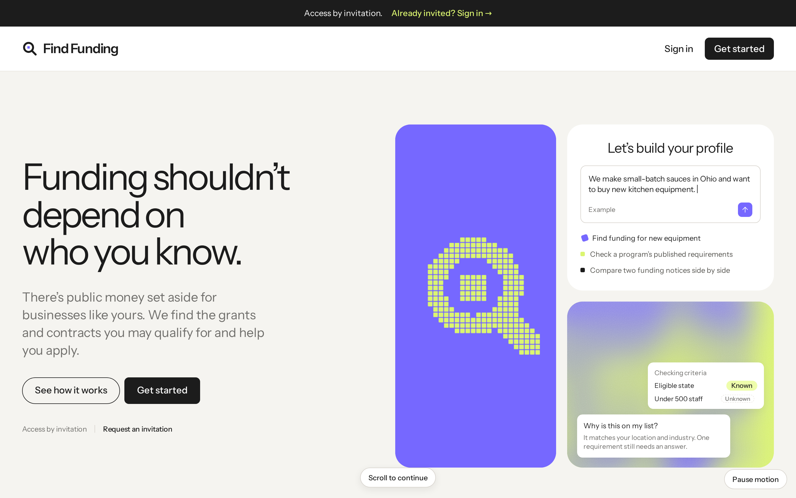
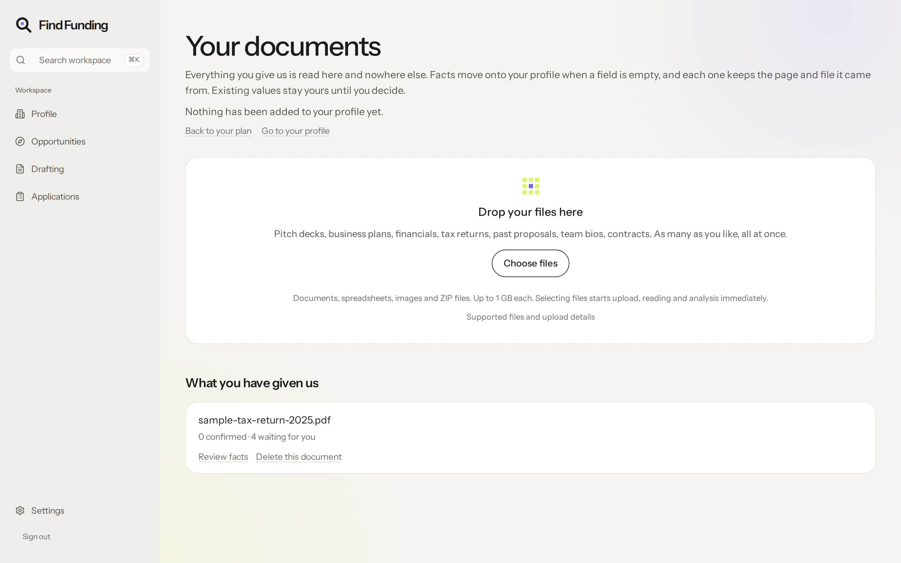
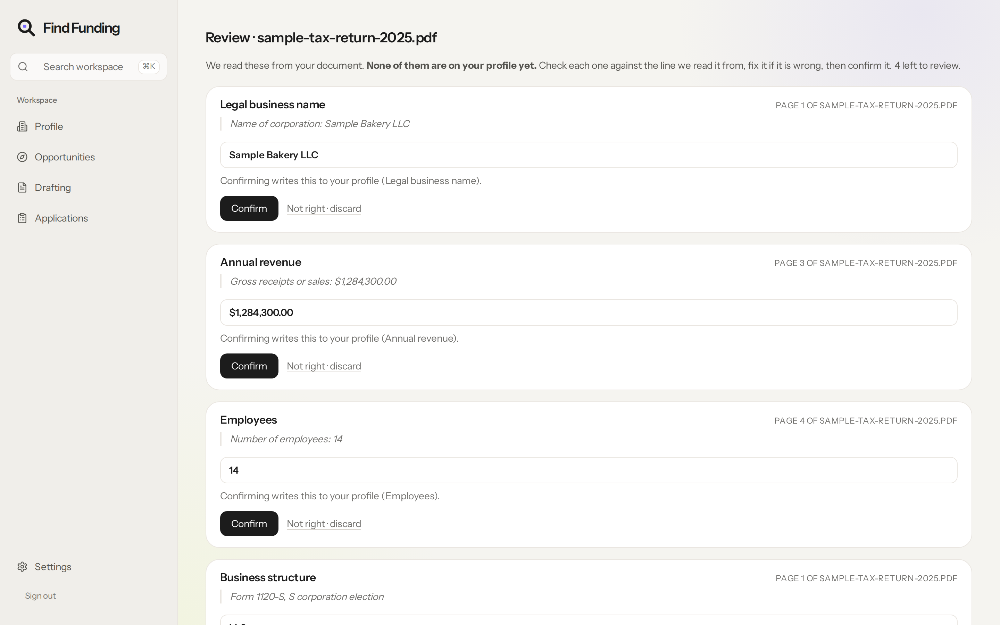
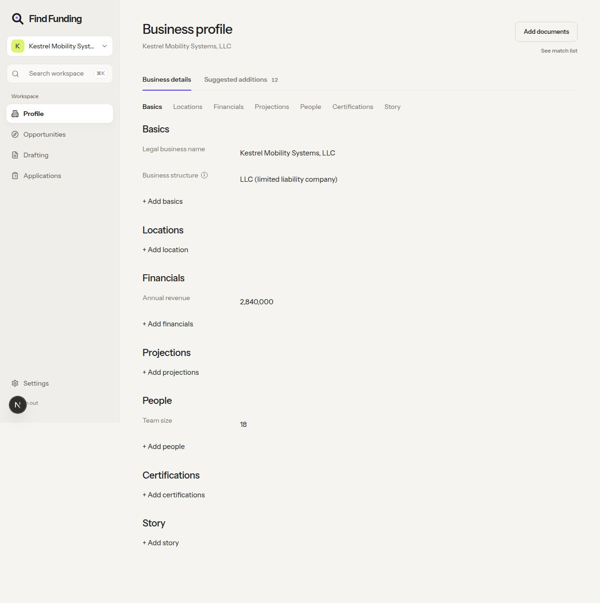
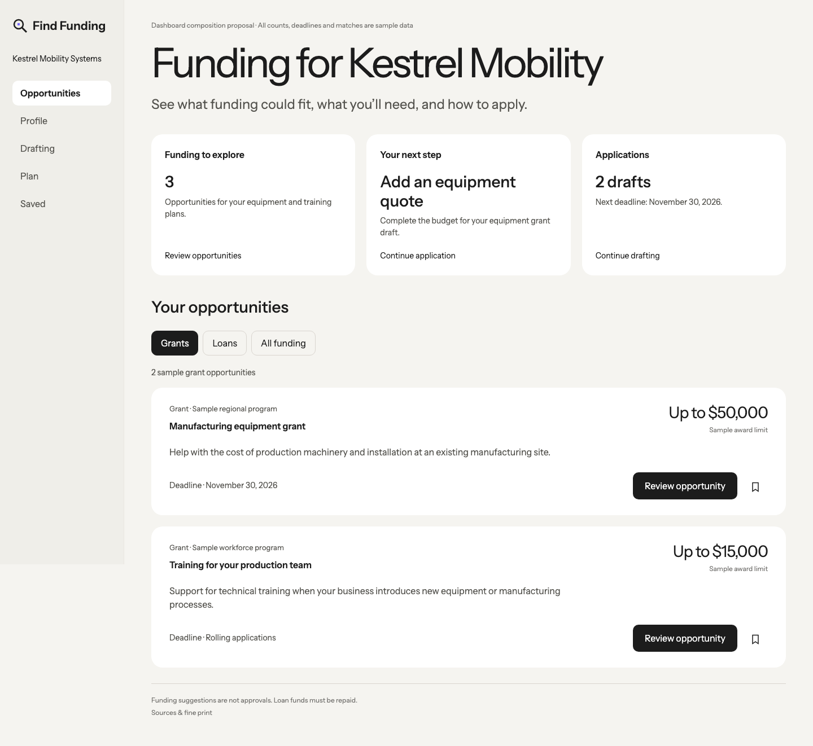

find funding matches small businesses with the grants and loans they qualify for. it reads your documents, builds your profile and plans your applications. the owner makes every decision.
design engineer, cpo & cofounder. i designed the whole product and made it agentic.

the live site, running in the window
there is public money set aside for small businesses: grants, sba loans, state programs. it tends to reach the owners who already know someone. the homepage says the fix in one line: "funding shouldn't depend on who you know."
so the product starts from what an owner already has. it reads the tax return, the p&l and the business plan into a profile, then ranks real programs by how many of their published rules the business already meets. confirmed fit, not promising fit.
i wrote the system as a few decisions that carry the whole product. size carries hierarchy. each color has one job per surface. an unknown stays unknown. the canon puts the card in one line:
"at rest a card or row holds: title (16/600), one sentence-case meta line, a summary clamped to two lines, and at most one status element plus the fixed metrics."
written down, every design call points at a rule, so the product stays one product as the team ships around it.
violet #7668ff
the working accent and the logo pixel. one filled accent per surface, so your eye always knows what to do next.
lime #dbf570
violet's partner. it also marks known, so it always means something.
canvas #f5f4f0
warm neutrals, so a money product feels approachable instead of bank-cold.
surface #ffffff
cards sit one step up from the canvas. no shadows needed to separate them.
ink #1c1c1c
near-black, never pure. nothing else gets a color unless it has a job.
resting card · built from the tokens, sample data
compact at rest: density without noise.
expanded card · built from the tokens, sample data
detail on demand. an unknown rule stays dashed and never becomes a pass, because a false pass costs the owner their time.
most funding tools are forms and lists: thirty fields to type your business into, then a catalog to scroll. i designed the opposite. the product does the reading, you do the deciding.

in the product, sample data
drop documents, don't retype them.
onboarding starts with an upload. drop a tax return, a p&l or a business plan, and the product proposes facts from it: legal name, structure, revenue, team size. the owner goes from typing to checking, a smaller job and the right one, because they know their business best.

in the product, sample data
confirm, never accept-all.
each proposed fact shows what was read, where (page and verbatim excerpt), what confirming it does, and an editable box. nothing is pre-selected and there is no accept-all. the comment at the top of the component says why: "the whole point of this screen is that a person looked."

in the product, sample data
the profile is a living record of everything the product learned, with the source shown inside the field you're editing. suggestions wait in their own tab and never overwrite what you saved.
projected revenue from a business plan goes into projections, never into actual revenue. a plan is a hope, and a program's rules check what you actually earned.

in the product, sample data
matching is a plan, not a catalog.
after sign-in you land on opportunities: funding that could fit, your next step, your drafts. grants and loans are filters on one page. ranking is by rules met, an unconfirmed rule never counts, and nothing is paid placement. expand a card and it shows why it's on your list, rule by rule.
one page, because the owner's question is "what fits me," not "what kind of money is this."